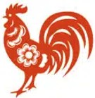

Pinyin: jī | Prinzip: Yin | Element: Metall
Der Hahn steht an zehnter Stelle des chinesischen Tierkreises. Er symbolisiert Genauigkeit, Organisation, Selbstbewusstsein und Pünktlichkeit. Hahn-Geborene sind ehrliche, direkte und perfektionistische Charaktere.
Sie verfügen über hervorragende analytische Fähigkeiten und behalten stets den Überblick. Hähne kleiden und präsentieren sich gerne stilvoll. Man schätzt sie für ihren Mut, die Wahrheit offen auszusprechen, und ihre Verlässlichkeit.
Im chinesischen Kalender verbindet sich jedes Tierkreiszeichen mit einem der 5 Elemente (Metall, Wasser, Holz, Feuer, Erde) in einem 60-Jahre-Zyklus. Da das chinesische Neujahr zwischen Ende Januar und Mitte Februar beginnt, gehören im Januar/Februar Geborene oft noch zum vorherigen Jahr.
| Zeitraum (Chinesisches Jahr) | Element | Besondere Ausprägung |
|---|---|---|
| 26.01.1933 – 13.02.1934 | Wasser-Hahn | Diplomatisch, verständnisvoll, wortgewandt und ruhig. |
| 13.02.1945 – 01.02.1946 | Holz-Hahn | Gemeinschaftsorientiert, freundlich, pünktlich und fair. |
| 31.01.1957 – 17.02.1958 | Feuer-Hahn | Energetisch, ausdrucksstark, durchsetzungsstark und aktiv. |
| 17.02.1969 – 05.02.1970 | Erde-Hahn | Sorgfältig, pflichtbewusst, pragmatisch und bodenständig. |
| 05.02.1981 – 24.01.1982 | Unbeugsam, fokussiert, stilbewusst und von hoher Präzision. | |
| 23.01.1993 – 09.02.1994 | Wasser-Hahn | Analytisch, kooperativ, klug und kommunikativ. |
| 09.02.2005 – 28.01.2006 | Holz-Hahn | Strukturiert, vielseitig, hilfsbereit und verlässlich. |
| 28.01.2017 – 15.02.2018 | Feuer-Hahn | Charismatisch, ehrgeizig, ausdrucksstark und dynamisch. |
| 13.02.2029 – 02.02.2030 | Erde-Hahn | Pragmatisch, diszipliniert, verlässlich und sicherheitsorientiert. |
| 01.02.2041 – 21.01.2042 | Präzise, entschlossen, selbstbewusst und prinzipientreu. |